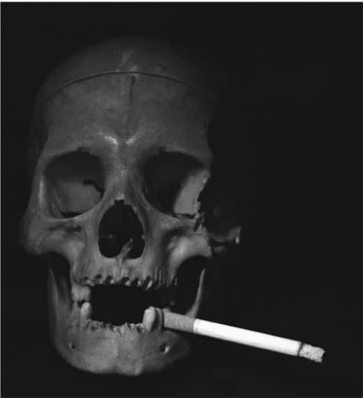
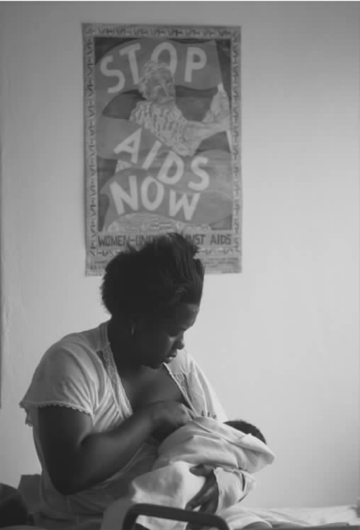

（查尔斯·狄更斯，《圣诞颂歌》）
未来的医学是现在的研究。这就是为什么我们如何分配研究资源与我们如何分配卫生保健资源至少同等重要的原因。但是这不是伦理学讨论的重点问题。大多数有关医学研究的伦理学讨论针对的都是研究应如何被管理的问题。的确，医学研究在很多方面都受到了比医学实践更严格的管理。精读无以数计的医学研究守则后，这样的想法也是可以被原谅的：医学研究就像吸烟一样对身体有害；在自由社会，既然医学研究不能被完全禁止，那么为了将它可能带来的危害减到最低，严格的管理是必须的。
严格的管理有历史原因。1946年，一些纳粹医生进行的骇人听闻的实验导致了第一套国际上认同的人类医学研究的守则《纽伦堡法典》的产生。该法典包括十条准则，这些准则被医学专家纳入了《赫尔辛基宣言》，于1964年由世界医学协会第一次出版，最后一次再版是在2000年。《赫尔辛基宣言》有多个合法性不一的产物以医学研究守则的形式出现。这些守则着重于四个主要问题：尊重研究中潜在参与者的自主权，危害的风险，研究的价值和质量，以及正当性。

图24 阅读了大量守则后你可能会认为医学研究跟吸烟一样对身体有害。
考虑到伤害风险，讨论就会很有趣了。守则认为参与者在研究中受到危害的风险应降到最低。即使参与者是完全理解研究风险和利益但却仍然自愿参与的成年人也是如此。尽管最小伤害的定义并不完全清楚，但通常参照在正常生活中厌恶风险的人所设定的标准。换句话说，守则有强烈的家长式作风。
图25 有行为能力的成人为了享受滑翔伞运动可以承担一定的风险，但是为帮助医学研究承担同样的风险是不被允许的。这难道不是对我们基本自由权的侵害吗？
为什么伤害风险在医学研究中比在生活其他领域中更应被谨慎地控制和限制？我们不会禁止滑雪橇、摩托车或悬挂式滑翔机的销售或购买，尽管这些物品会使购买者面临一定风险。为什么医学研究的控制与此不同？
双重标准
这是医学研究的管理强加了似乎与生活中其他领域格格不入的标准的唯一一个例子。另一个例子是关于提供给参加临床试验患者的信息量的。
对比下面两种情形：
临床病例
医生A在门诊部会见患者B。B患有抑郁症，需要抗抑郁药治疗。有几种略有不同的抗抑郁药供选择。医生A建议B服用一种特殊的抗抑郁药（药物X），他对这种药最熟悉并且这种药也适用于B。医生A告知了B药物X可能的好处及副作用。但是对其他能开处方的抗抑郁药却只字未提。
临床试验
临床试验是评估医学治疗价值的标准方法。假设目前治疗疾病D的标准方法是使用药物X。现在新药Y刚刚被开发出来。初步研究显示，Y可能对疾病D有治疗作用，而且可能更甚于X。确定哪种药更好的最佳方法是，给一些患者服用药物X，给另一些服用药物Y，然后比较哪一方效果更好。采用试验药物（Y）治疗的患者组被称为试验组。采用传统药物（X）治疗的患者组被称为对照组。两组患者（试验组和对照组）的背景大体相似是十分重要的。如果其中一组有特别严重的患者，试验结果将受到误导。保证两组间没有重大区别最好的方法是采用随机法（“扔硬币”）来把患者分配到每个组，并且采用尽量多的患者。最好的临床试验是大量随机化对照试验（RCTs）。如果某种治疗方法（治疗法Y），例如某种新药，是用于尚未有现行（传统）治疗方案的情况，那么对照组就服用安慰剂——一种模拟药。因此，如果Y是片剂形式的药物，安慰剂也是看起来像含有Y的药片，但是其实里面并不含有有效成分（Y）。这是非常重要的，因为在很多情况下，患者只要相信他们接受了有效治疗，病情就能在一定程度上得到改善。此外，事先知道患者是否接受有效治疗，会使医生在诊断患者是否好转时产生偏倚。因此，让患者和医生都不知道患者属于试验组还是对照组是非常重要的。
研究案例
一项随机化对照试验正在进行以用于比较两种抗抑郁药：药物X和药物Y。尽管医生A倾向于开药物X，但他并没有很好的证据说明他更倾向于X的理由。确立两种药物的相对有效性和副作用是非常重要的。医生A因此同意询问一些合适的患者是否愿意参加试验。医生A在门诊部会见B。B患有抑郁症，是试验的合适人选。为了遵守研究伦理学守则规定的标准，医生A必须获得B参加试验的有效同意书。他必须告知B试验的内容及目的。他也必须告知B有两种药物X和Y，并且开哪种药物将会是随机选择的。
在研究案例中，守则和研究伦理委员会（也被称为制度评估委员会）要求医生A告知B两种药物的信息和开处方时的选择方法。在临床病例中这种标准并不是必须遵守的。这种差别正当吗？如果正当，那么显然两者的标准不同。如果不正当，那么我们就在操作“双重标准”——标准是不同的并且这种差别并不正当。双重标准是不一致的一个例子。这告诉我们至少有一种标准需要被改变。
这是本章我想着重讲的第三个关于不同标准的例子。准确地来说，这不是研究和日常生活之间的比较，也不是研究和医学实践之间的比较，而是富国研究和贫国研究之间的比较。
国际医学科学组织委员会在其1993年的守则中列出了以下原则：
《新英格兰医学杂志》的前编辑玛西娅·安吉尔写下了以下的话：“世界上任何地方的人类应该被相同数目的伦理标准保护。”以下的研究打破了这个公平原则吗？安吉尔认为是的。
人类免疫缺损病毒（艾滋病病毒）会引发艾滋病。感染了艾滋病病毒的怀孕妇女可能将病毒传给她的孩子，这就是“垂直传播”。用齐多夫定（被称为ACTG 076疗法）治疗被感染的怀孕妇女会减少垂直传播的概率。疗法包括怀孕期间口服齐多夫定，分娩时静脉注射齐多夫定和进一步给新生儿服药。这种疗法花费昂贵，在贫穷国家不可能普遍适用。一种更便宜但是更有效的疗法将可以潜在地预防贫国大量婴儿感染艾滋病病毒。如果没有更便宜的疗法，在贫国就没有可用于预防艾滋病病毒垂直传播的疗法。

图26 控制国际医学研究的“伦理守则”会减缓贫国有效疗法发展的进程吗？
1997年ACTG 076疗法在美国被定为标准疗法，因为它是唯一被证明有效的疗法。只包括口服齐多夫定的一种更便宜的疗法曾被认为是有效的。
在贫国可能实施的两种试验设计在科学上是合理的。第一种是用安慰剂与较便宜的疗法作比较。第二种是用昂贵疗法（ACTG 076疗法）与较便宜的疗法作比较。第一种设计的目的在于回答：便宜的疗法比什么都不做（安慰剂）要好吗？第二种设计在于回答：便宜的疗法和贵的疗法一样有效吗？在这个例子中，在贫国引进昂贵疗法作为标准疗法是不现实的，因此关键问题是：便宜的疗法比什么都不做好吗？采用第一种（安慰剂）设计能更迅速地回答这个问题，牵涉更少的病人，也更便宜。这种设计已经由富国出资在贫国实践了几次。
大家普遍认为，治疗试验中的对照组应该接受标准治疗（与不参加试验的人相比，他们不应该由于参加试验而受到损害）。如果参与了一个在英国或美国的治疗试验，这个试验用于评估一种可能有效的降压新药，你将接受新药或者到目前为止最好的疗法。你服用的不会是安慰剂。给安慰剂将是不道德的，因为已经有有效的疗法了。
因此，援助国（美国）因为标准疗法在本国是昂贵的疗法（ACTG 076疗法）而采用比较便宜的用安慰剂做对照的疗法试验，是不道德的。因此基于平等原则，很多评论家认为在贫国开展用安慰剂做对照的研究是不道德的：这是双重标准。进一步说，这种研究违反了《赫尔辛基宣言》，此宣言中声明疗法研究中的对照组应接受目前最好的治疗。
图27 赫尔辛基：《赫尔辛基宣言》为管理世界范围内的医学研究提供了核心伦理学原则。
但是这个观点也有强有力的反证。如果试验在富国进行，那么让病人接受安慰剂治疗就是错误的，因为在正常临床实践中他们可以接受有效治疗。此外，人们已经知道有效治疗比安慰剂要好。现在考虑一下贫国的情况。在正常临床实践中患者不会接受任何治疗。确实，许多感染了艾滋病病毒的怀孕妇女不会有卫生保健。《赫尔辛基宣言》中声明的原则（对照组应接受目前最好的治疗）语意不明。目前最好的治疗是指世界上最好的，还是开展研究的国家中最好的？那些相信在贫国用安慰剂做对照是不道德的人，认为负责任的伦理委员会不应该允许此类试验。但是没有试验，贫国就没有人能接受预防垂直传播的治疗。因此，在采用安慰剂做对照的试验中，没有人会接受更差的治疗，而一些人（接受新疗法的人）可能接受更好的治疗（尽管在试验结果出来之前我们不知道新疗法是否有效）。这与在富国开展安慰剂对照实验形成强烈对比，因为在那样的情况下，服用安慰剂的人与不参与试验的患者相比病情会恶化。简单的说，没有人会在贫国开展的安慰剂试验中受害，而一些人则会受益。
上述论证的结论是，总的来说，在贫国进行安慰剂对照试验对人民更有好处。因为这个试验对发展贫国能负担得起的预防垂直传播的疗法有利，贫国的人最终也能受惠。如果试验因为对于贫国人民不公平、不道德而被禁止，那么贫国人民的状况将会更糟。如果公平治疗意味着完全没有治疗，那么给我不公平的治疗吧。
反对的人也许会说，尽管有安慰剂对照试验比没有试验要好，但是使用昂贵疗法做对照更好。但是这会花费更多。谁来付钱？也许富国的人应该付更多的钱给贫国，但是这是否应强加给研究的资助者呢。同样，资助的钱用于向试验对照组提供昂贵的艾滋病病毒治疗是否最合适也未可知。多余的钱或许更适合用于其他地方——比如更有益于贫国人民健康的地方。
总的来说，安慰剂研究不是不道德的——没有人从中受害而有一些人从中受益。如果不开展研究，贫国人民的状况将会更糟。上文提到的《赫尔辛基宣言》中陈述的原则应被理解为，对照组应接受在开展研究的社会中最好的治疗，而不是世界上最好的治疗。关于贫国人民低水平的卫生保健有一个道德问题——这是公正的主要问题。但是这个问题需要政府和工业来解决。这种潜藏在深处的根本性的不公平不应该被用于阻碍总体上能使贫国人民受益的研究。
我提出了两种相反的观点：
1.在贫国的临床试验中用安慰剂做对照是不道德的，因为这样做在富国被认为是不道德的，伦理委员会不应该允许这样的试验发生。
2.尽管不理想，用安慰剂做对照不是不道德的，伦理委员会允许这样的试验是正确的。
持有第一种观点的人似乎是天使的化身，他们大胆地声称身在富国的我们不应该以不同的方式对待贫国的人民。第二种观点以理性论证的尖刀割开了我们的仁慈心，告诉我们那是被误导的。当理性论证与仁慈本性相违背时，我们应该怎么做呢？答案肯定是：重新检查我们的本性和论证。为什么第一种观点是天使的观点？因为我们感觉这样对待比我们条件差的人就如同我们会受到同样对待。如果按照第二种观点行动，我们会感觉像在剥削穷人。但是对第一种观点的批判似乎是合理的：如果严格在贫国设定与富国同样的标准，我们作的决定（停止研究）将会剥夺的正是我们想要公平对待的那些人的利益。
走出这个僵局的关键是词组“剥削穷人”。人们能从某些东西中获益但仍然被剥削。想一想在南美被跨国公司雇佣的低工资的咖啡豆采摘工人，没有这种雇佣关系，他们的情况会更糟。但是如果公司获得了很多的利润，他们就是在剥削采摘工人。利益应该被公平地分享：这是“公平交易”的定义。我们考虑过的这两种相反观点都太狭隘了。
第一种观点在强调公平问题上是正确的，这与剥削直接相关。但是它错在盲目地运用了一个能有多重解释的原则（对照组应接受最好的治疗）。第二种观点在显示运用原则不符合贫国人民的最大利益上是正确的，但是只考虑了两种可能性。我们需要一个更广泛的观点，该观点的起点在于伦理关切是贫国和富国在财富和卫生保健方面的巨大差距。
对于跨国医学研究而言，这一观点的意义包括：（a）研究的开展应为贫国人民提供合理利益，穷人和富人之间的利益须进行合理分配；（b）为了正确评估贫国的利益怎样能最大化，必须现实地看待什么应在贫国坚持下去；（c）研究者不仅应对贫国参与试验的人负责，也应对更广泛的人群负责。因此公共健康的视角是必须具备的。只注意到研究参与者的最大利益而忽略整个人群，是过分个人主义的。
亨利·福特说过一句著名的话：“历史就像是铺位。”这句话也被说成（尽管不知道是谁说的）：“那些对历史一无所知的人正是被谴责重蹈历史的人。”当前的国际医学研究管理在过去纳粹的阴影下扭曲地发展着。该管理纠结于一个主要问题：保护研究参与者不被滥用。尽管这很重要，但是解决以下这个建设性问题的伦理意义却丧失了：如何把医学研究的好处最大化？在贫国的研究中，现在这个建设性的问题更迫切地需要得到解决。
班纳塔和辛格写道：
确实如此。